Biomedical engineering portfolio
Built around
better living.
I’m Matthias. I turn everyday problems into practical devices, systems, and prototypes.
Descend through my storyEnd of this chapter
01 / Origin
Biomedical engineering portfolio
I’m Matthias. I turn everyday problems into practical devices, systems, and prototypes.
Descend through my storyEnd of this chapter
I’m a Biomedical Engineering student at Nanyang Polytechnic with a strong interest in practical device design and prototyping.
I enjoy taking a real-world frustration, understanding who it affects, and turning it into something useful through iterative design, testing, and clear documentation.
A digital inventory and alert system for school first-aid supplies.
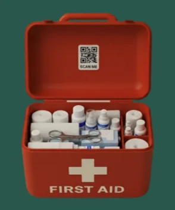
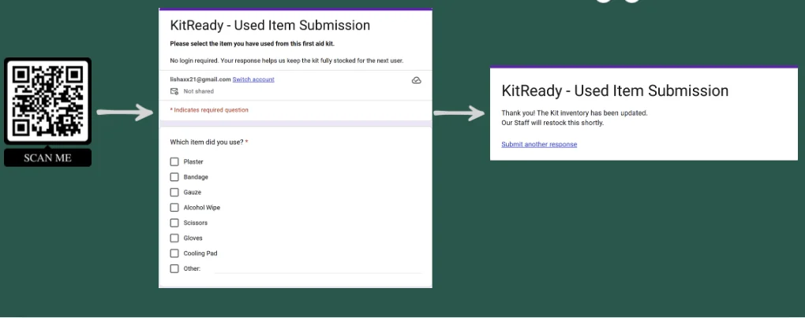
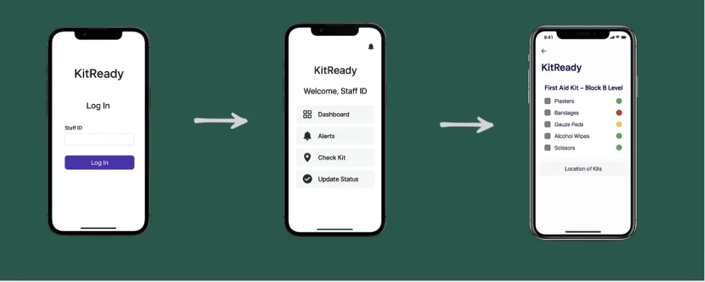
First-aid kits are often checked manually only during audits or emergencies. That can leave expired, missing, or insufficient items undiscovered until they are needed.
KitReady uses QR codes and a simple online dashboard so staff can log item usage in seconds. Timely low-stock alerts make readiness proactive without adding administrative burden.
A training partner that is ready whenever the player is.
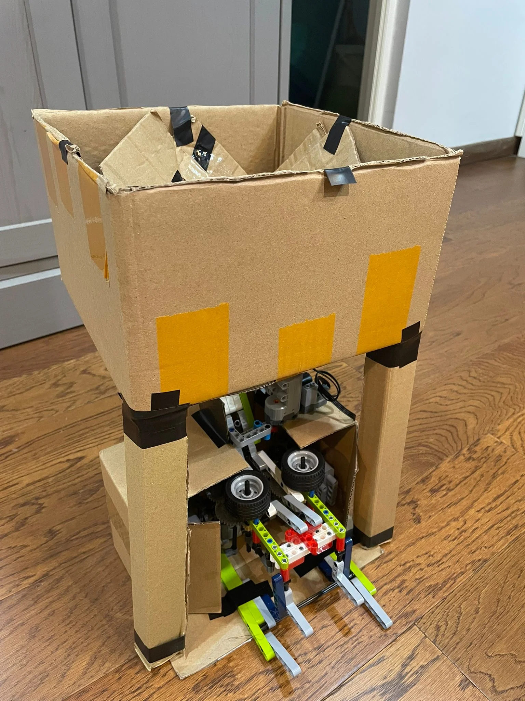
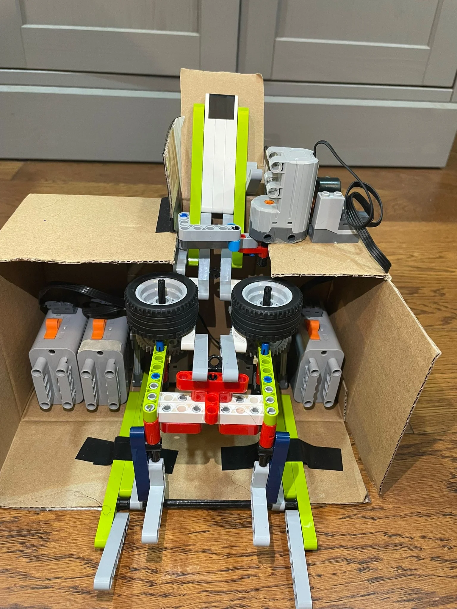
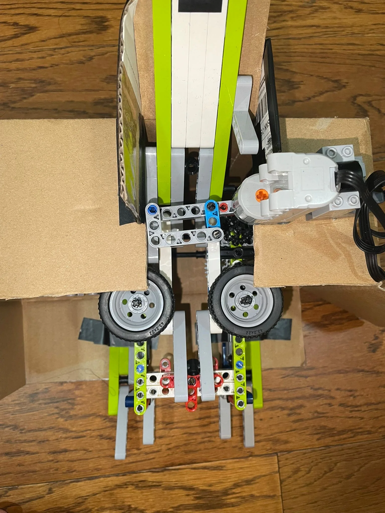
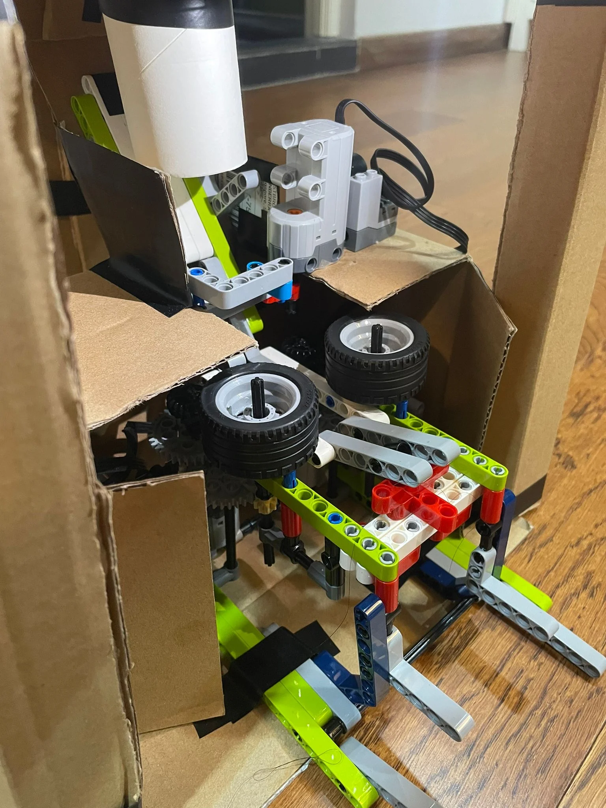
Effective table-tennis training usually requires a partner to return shots, making it difficult to practise timing, accuracy, and stroke control consistently.
Our machine automatically returns balls at controlled speeds and angles, allowing players to practise independently and focus on repeating key skills.
Pressure relief designed around comfort, airflow, and stability.
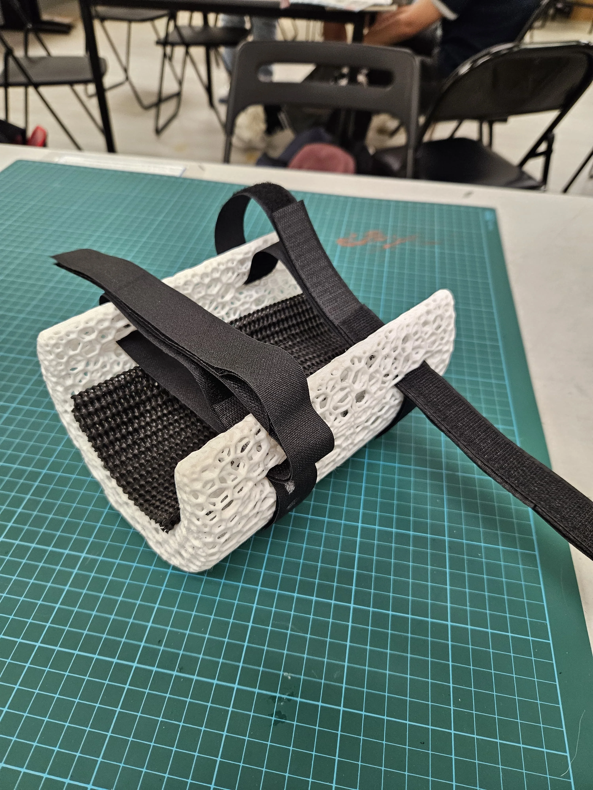
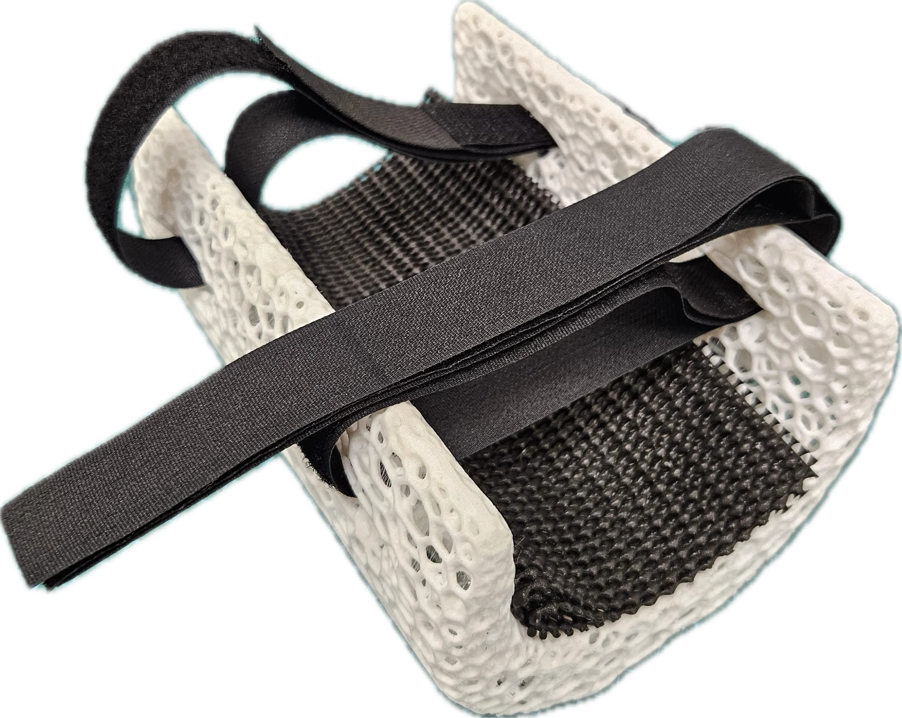
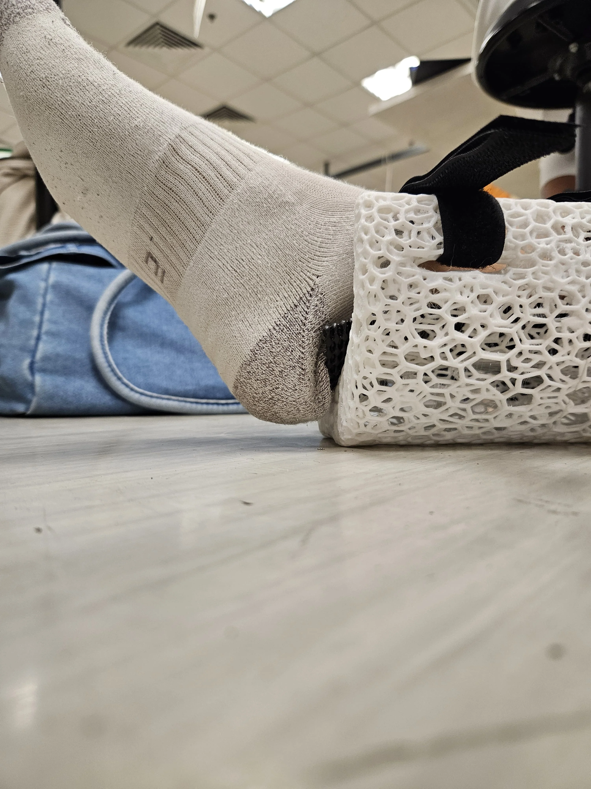
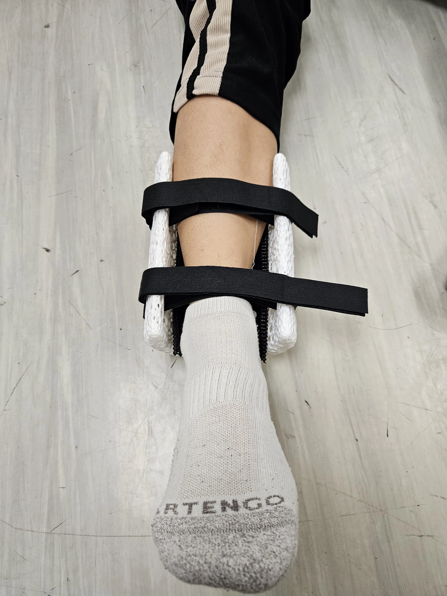
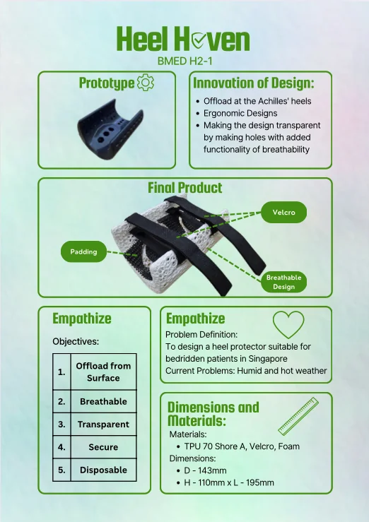
Prolonged heel pressure is a major contributor to pressure injuries in bed-bound or immobile patients.
Heel Haven fully elevates the heel while maintaining comfort and stability. Its lightweight, breathable structure improves airflow and reduces heat and moisture build-up.
2× Singapore Junior Biology Olympiad, 2× Singapore Junior Chemistry Olympiad, International Biomedical Quiz, and the VJC Amazing Race.
Basketball taught me resilience, trust, and how to stay optimistic through trials and setbacks.
Planning and coordinating with a team strengthened my confidence and ability to communicate clearly.
I’d love to hear about it.